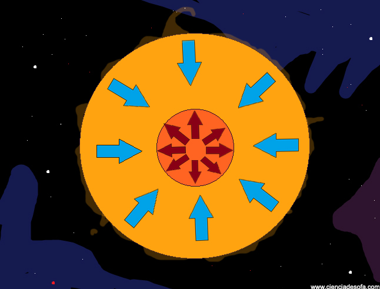

Variables cefeidas: relación período-luminosidad y mecanismo de pulsación.
Introducción
Todas las estrellas muestran variabilidad en el brillo y color durante su vida evolutiva. Por lo tanto, definimos estrella variable a aquella que sufre estas variaciones en el lapso de una vida humana.
Pueden ser periódicas, semiperiódicas o irregulares, con tiempos de pocos minutos a un siglo. Se pueden clasificar de la siguiente manera:
Variables extrínsecas: cuyos aparentes cambios en el brillo son debidos a cambios en la cantidad de luz que puede llegar a la Tierra.
Variables intrínsecas: cuya luminosidad cambia realmente por características intrínsecas de la estrella.
En agosto de 1595 el pastor y astrónomo aficionado David Fabricius observó la estrella omi Cet. Luego de unos meses notó que su brillo era menor, y alrededor de octubre la estrella había desaparecido del cielo. Varios meses después, omi Cet recuperó su brillo inicial. En honor a este “milagroso evento”, se le dio el nombre de Mira, que significa “maravilloso”.
En un inicio, sus cambios regulares de brillo se le atribuía a posibles manchas oscuras en la superficie de la estrella rotante. Hoy en día, lxs astrónomxs saben que estas variaciones no se deben a dichas manchas, sino que Mira es una estrella pulsante, es decir, su brillo y sus dimensiones cambian a medida que su superficie se expande y se contrae.
En 1784 John Goodricke encontró que la estrella Delta Cephei tenía un periodo de variabilidad de 5d 8h 48m. La gran cantidad de observaciones nocturnas para alcanzar dicho resultado le costó su vida ya que contrajo una neumonía y murió a los 21 años. A diferencia de omi Cet, delta Cephei varía su brillo en aproximadamente una magnitud, y nunca se desvanece del cielo. Estrellas pulsantes similares a delta Cephei llevan el nombre de Cefeidas clásicas.
Figura 1

Para 2005 ya había más de 40000 estrellas pulsantes catalogadas. Henrietta Swan Leavitt descubrió más del 5% mientras trabajaba como “computadora” para Edward Charles Pickering en la universidad de Harvard. Su tedioso trabajo constaba en comparar dos placas fotográficas de un mismo campo en diferentes momentos e intentar hallar algún tipo de variabilidad en el brillo de las estrellas. Particularmente encontró 2400 cefeidas clásicas con períodos entre 1 y 50 días en la Nube Menor de Magallanes, por lo que aprovechó para investigar la naturaleza de este fenómeno. Así, notó que las cefeidas más luminosas eran también las que completaban su ciclo pulsante más lento.
Figura 2
Esto la llevó a realizar un gráfico de la magnitud aparente vs el período de pulsación.
La imagen muestra que la magnitud aparente de las cefeidas clásicas está fuertemente relacionada con su período.
Como todas las estrellas de la nube menor de magallanes deberían estar aproximadamente a la misma distancia, la variación en magnitud aparente debería ser igual a la variación en magnitud absoluta.
Esto nos quiere decir que las diferencias en el brillo que podemos apreciar se deben a variaciones intrínsecas de la estrella, a cambios en su luminosidad. Lxs astrónomxs estaban muy entusiasmadxs ante la posibilidad
de poder determinar la magnitud absoluta o la luminosidad de una estrella mediante su período de pulsación, ya que al conocer ambas magnitudes podemos inferir fácilmente la distancia a dicho astro utilizando la fórmula de módulo de distancia. Esto permitiría la medición de largas distancias en el universo, algo completamente nuevo ya que el método de la paralaje tiene fuertes limitaciones.
Figura 3
Para poder obtener la magnitud absoluta o la luminosidad de una estrella, necesitamos saber la distancia a la que se encuentra. Lo interesante es que a partir de estas observaciones se puede ajustar una relación entre el período y la luminosidad, la cual sirve para medir distancias a cualquier otra cefeida.
La cefeida más cercana es Polaris (200pc). A principios del siglo 20, Hertzprung midió la distancia mediante la paralaje. De esta forma, se pudo calibrar la relación período-luminosidad en la banda V con el período en días:
.png)
En relación a la luminosidad, obtenemos entonces
.png)
Figura 4
Ubicación diagrama HR
En la Vía Láctea hay una cantidad estimada de varios millones de estrellas pulsantes; al comparar esta cantidad, con los miles de billones que la contituyen; la evidencia cuantitativa nos puede dar la idea de que el fenómeno de la pulsación estelar es transitorio.
Las Cefeidas son estrellas que se encuentran en la zona de inestabilidad del diagrama H-R, pues son estrellas más evolucionadas que nuestro sol; en ocasiones son supergigantes que se encuentran atravesando la banda de inestabilidad en donde se producen tales fluctuaciones; esto por consiguiente, genera cambios en su temperatura superficial.
Figura 5
Hipótesis de pulsación
Para calcular la distancia a una cefeida no nos importa en absoluto el por qué la estrella varía su brillo. En un principio se pensó que lo hacía debido a que dicha estrella se ubicaba en un sistema binario que generaba efectos de marea por interacción gravitatoria entre los cuerpos. Esto fue rápidamente refutado por Harlow Shapley quien sostenía que una vez conocido el tipo espectral podemos estimar masas y además de la observación de la curva de luz podemos obtener el período. Mediante la tercera ley de Kepler podemos calcular el semieje de la órbita del sistema binario. Por otra parte, una vez conocido el tipo espectral, también podemos atribuirle un radio a la estrella que estamos observando. Lo que ocurre aquí, es que el radio esperado de la estrella supera ampliamente el semieje de la órbita que logramos obtener con la tercera ley de Kepler. Es por esto, que Shapley propuso otra idea: las variaciones de brillo y temperatura en las cefeidas clásicas se debe a la pulsación de la misma estrella. Cuatro años después, Eddington propone un modelo teórico que se condice bastante con los cambios en magnitud, temperatura, radio y velocidad superficial durante el proceso de pulsación: el mecanismo válvula. La figura muestra estos cambios en delta Cephei.
El cambio en el brillo se debe fundamentalmente a la variación en 1000K aproximadamente en su superficie. La variación en radio suma al cambio en la luminosidad de la estrella.
El tipo espectral va variando a lo largo del ciclo entre F5 y G2. Podemos observar que las curvas de magnitud y velocidad superficial son muy parecidas. De esta forma, la estrella será más brillante si se expande más rápidamente.
Figura 6

Para entender bien el mecanismo pensemos en una capa, en principio de hidrógeno, y analicemos su comportamiento.
Cuando se terminan las reacciones nucleares en el núcleo de la estrella, la presión interna empieza a disminuir, lo que hace que las capas externas tiendan a colapsar. Al comprimirse la estrella, esta capa que estamos considerando se calienta, por lo que se vuelve más densa y opaca, impidiendo así, que los fotones escapen. Aumenta de esta manera la temperatura en las capas interiores y en el núcleo. De esta forma, la presión interna supera a la fuerza gravitatoria produciendo una expansión. Esta expansión hace que las capas externas vuelvan a enfriarse y que la opacidad disminuya, facilitando así la disipación de calor.
El problema de esta explicación es que la opacidad típicamente depende de la densidad y de la temperatura de la siguiente manera:
.png)
Entonces...¿cómo puede ser que al aumentar la temperatura aumente a su vez la opacidad? Necesitamos que la opacidad aumente a mayor temperatura.
Alexandrovich Zhevakin fue un astrónomo Ruso que descubrió que parte de la energía interna, en lugar de aumentar la temperatura, se gasta en ionizar el medio, es decir, en liberar electrones.
Figura 7
Lo que le sucede entonces a esta capa es que, cuando colapsa, parte de la energía interna ioniza el elemento del cual está formada (puede ser hidrógeno, helio, entre otros) y otra parte aumenta la temperatura. La clave en este proceso está en que la densidad termina superando ampliamente a la temperatura, siendo este el causal de que la opacidad aumente y la radiación no pueda escapar. Una vez que la presión interna aumenta y supera a la fuerza gravitatoria, la capa se expande y enfría, logrando la recombinación electrónica y vuelve a bajar su opacidad, logrando así, que la radiación escape. Una vez que la fuerza gravitatoria supera nuevamente a la presión interna el ciclo vuelve a repetirse.
De esta forma, se dice que el hidrógeno o el helio actúan como válvulas, dejando pasar o no la radiación debido a su ionización y recombinación electrónica.
Es importante entender que este proceso no puede ocurrir en cualquier capa de la estrella. Si ésta se encuentra cerca del centro no podremos apreciar la pulsación, y si se encuentra cerca del borde tal vez nunca adquiera la temperatura necesaria como para ionizarse. Dependiendo de la temperatura de la estrella, existen zonas de ionización parcial del hidrógeno y del helio donde este mecanismo se puede llevar a cabo y nosotrxs podremos apreciar una variación en el brillo de la estrella desde la Tierra.
Un esquema ilustrativo de cómo la posición de estas zonas determinan las características pulsacionales se pueden establecer con la Figura 7. Aquellas estrellas con temperaturas efectivas superiores a 7500K, ubican estas zonas muy cerca de la superficie donde la densidad disponible es baja para conducir efectivamente la pulsación. De otra manera aquellas estrellas más frías que 5000K ubican sus zonas de ionización muy en su interior, provocando que la mayor parte de la energía se transporte por convección amortiguando la pulsación, aquí la energía ya no es retenida para ionizar más el material.
Como las Cefeidas cumplen con todas estas condiciones particulares previamente descriptas, ocupan -como es de esperar- la región específica del diagrama HR antes detallada que puede observarse en la Figura 4.
Bibliografía
- Relaciones período-luminosidad infrarrojas de variables cefeidas en la gran nube de magallanes- Sebastián Camilo Morales G. Trabajo de grado presentado al Programa Académico de Física como requisito para optar al título de Físico. Universidad del Valle.
- An introduction to modern astrophysics - Dale A Ostlie, Bradley W Carroll
- Handbook of practical astronomy - Günter D Roth